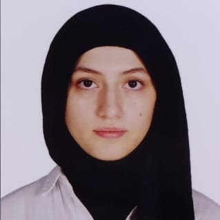

Sara ALRYHAWI
ID: 2210206589

Personal Details
- Name: Sara ALRYHAWI
- Age: 20
- City-Country: Syria
- Phone Number: +90 545 682 6722
- Email: sarrarihawi@gmail.com
- Address: Türkiye, Karabük, 100.Yil
ABOUT ME
I am sara , i am 20 years old from Syria , live in Türkiye Computer engineering graduated
i recently graduated and i have a previous year of experience , i am looking to work in a large company as a computer engineer also aspire to develop my skills .
SKILLS
- Using design application
- Using different programs in the computer
- Using translation programs
- Computer games design
EXPERIENCE
- From 2024 until 2027 i study at the University of Computer Engineering
- I worked for a year in a government institution
- I got courses in computer engineering over the year
EDUCATION
I graduated from high school in 2022 with a total of 99,95% with honors and i was the first on the school,
the level of University education , i graduated from the University of Karabuk in 2027 with honors.Currently, I complete my education for the level of master.
CERTIFICATIONS
- Secondary certificate from Safia Bint Abi Hayy School
- Computer engineering certificate from Karabuk University
- Certificates in some computer programs
LANGUAGES
- Arabic (C2 Level)
- English (B2 Level)
- Turkish (C1 Level)
HOBBIES
- Drawing
- Singing
- Horseback Riding